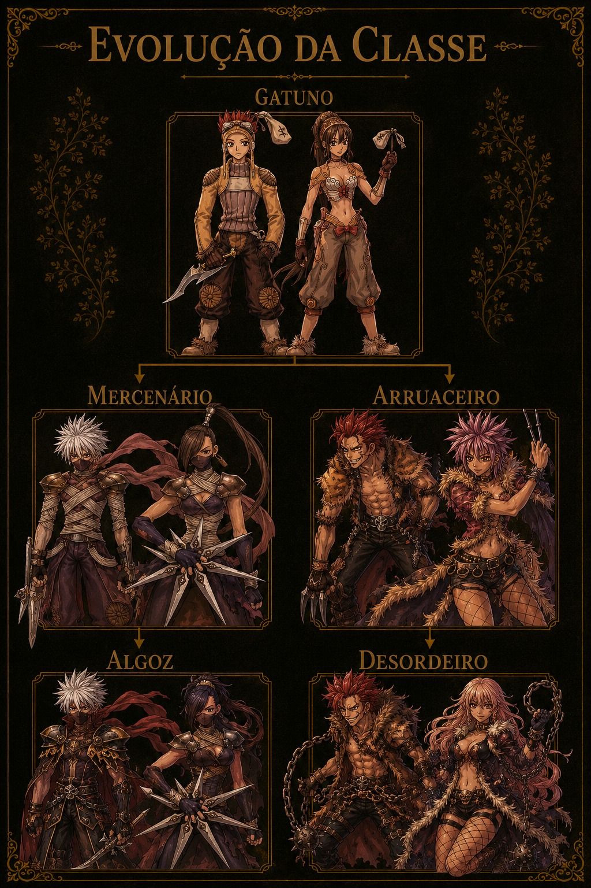
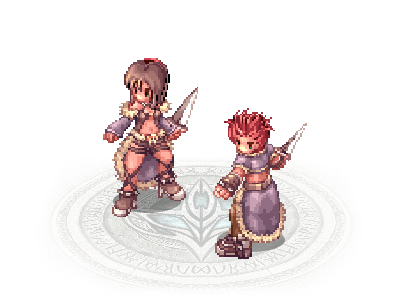

Sobre a Classe
Gatunos destacam-se pela agilidade e rapidez em combate. Mestres da esquiva e especialistas no uso de adagas, conseguem eliminar inimigos com extrema velocidade. Também dominam a furtividade, escondendo-se dos adversários e atacando no momento certo.
Dificilmente são acertados em batalha e podem se esconder dos inimigos camuflando-se no ambiente. Também são versados nas artes do veneno e no combate furtivo.
Função no Jogo
Essa classe é indicada para jogadores que gostam de mobilidade, esquiva e ataques velozes. O Gatuno pode seguir caminhos focados em dano crítico, furtividade e combate corpo a corpo.
Características
- Alta esquiva
- Velocidade de ataque elevada
- Bom dano crítico
- Estilo de jogo rápido e ofensivo
- Especialista em furtividade
